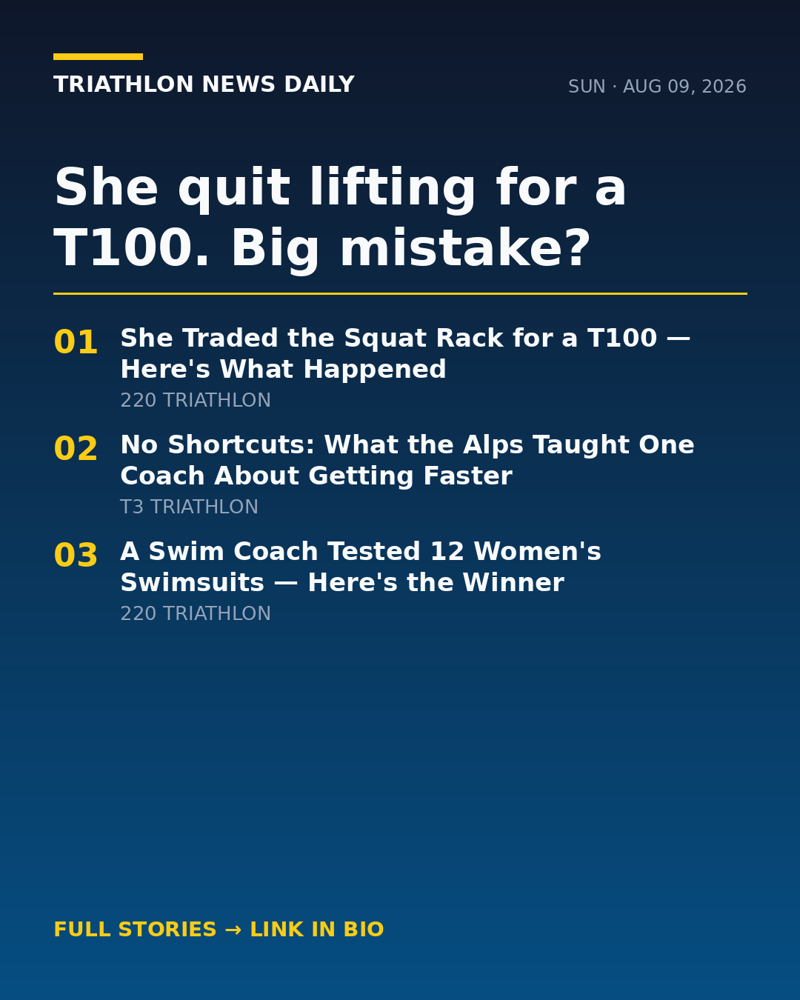

She quit lifting for a T100. Big mistake? Real talk from today's feed 👇 One writer ditched the squat rack for swim-bike-run to prep for her first T100 — then walked back into the gym to see what she'd lost. The answer is more nuanced than you'd think, and every hybrid athlete needs to read it. Meanwhile, a t3 coach is reminding us there's no app, no supplement, no aero helmet that replaces the years of honest work. The Alps don't care about your Strava. Also worth a click: a swim coach's deep-dive on 12 women's swimsuits, free Ironman plans if you're already eyeing 2027, and breakfast ideas that don't taste like cardboard. 🍳 Would you drop strength training to chase a long-course PR? 🔗 Full stories → link in bio (@trinewsdaily) #triathlon #ironman #swimbikerun #triathlontraining #70point3 #t100 #agegroupathlete #triathlete #triathlonlife #strengthtraining #hybridathlete #openwaterswimming #triathloncoach #enduranceathlete #runningcommunity #cyclinglife #ironmantraining #triathlonnutrition #womenintri #220triathlon
{kind=link}